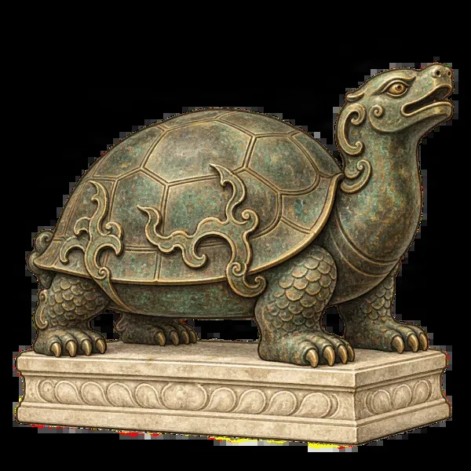

Forbidden City · families
The Forbidden City with kids
Last checked:

Is the Forbidden City good for kids?
Yes, with a plan: keep it to 2–3 hours, give them things to find rather than things to read, and finish across the road in Jingshan Park, where they can climb a hill. The full walk from the entrance to the north exit is about 1 kilometre of courtyards and stone paving, plus steps up to every hall, so the youngest children will need carrying or a buggy for part of it.
Do children need tickets?
Every visitor, including children, needs a booking under their own ID: book your children with their passports at the same time as yours. Free entry for under-18s applies to Chinese citizens and foreign permanent residents, and the ¥20 student ticket is for students aged 18 and over; check the price for other children when you book. Children under 14 must come with an adult, up to three children per adult. Tickets open at 20:00 seven days ahead; see how to book.
Is the palace easy with a buggy?
Not very: the main halls stand on terraces with stairs, and side routes have high thresholds and steps. A lightweight folding buggy or a carrier is easier than a big pushchair.
What will kids enjoy spotting?
- Roof beasts. Count the little figures on the roof corners; the Hall of Supreme Harmony has ten, more than anywhere else in China. See the roof guardians explained.
- Bronze animals. A tortoise and a crane on the terrace of the Hall of Supreme Harmony, lions at the gates (the one with a cub under its paw is the female), and kneeling bronze elephants in the Imperial Garden.
- Dragons. They are everywhere, on roofs, stairs, ceilings and drainage spouts. Ask for a count by the end.
- Doors. The big red gates have rows of golden studs: nine rows of nine on the most important ones.
- The Clock Gallery. Mechanical clocks with moving figures, birds and waterfalls, given to the emperors. ¥10 extra.
- The Imperial Garden. Old twisted trees, a rock hill and pavilions at the north end, the best place to let them run a little.
Where are the toilets and food?
Toilets are spaced along the central axis and in the side courtyards; the museum also has mother-and-baby rooms. Food is limited: cafés and kiosks sell snacks and drinks, so bring water and something to eat. There is very little shade in the big courtyards in summer.
Which route works with children?
Stay on the central axis from the Meridian Gate to the Gate of Divine Might, with one side trip at most. Penyola's shortest Forbidden City walk takes about 1 hour 40 minutes before queues; with children, allow 2–3 hours. The half-day route lists the stops.
When is the best time to go with kids?
Weekday mornings, right at the 08:30 opening. Avoid Chinese school holidays (July and August) and national holidays if you can; summer afternoons in the open courtyards are very hot. See the best time to visit.
What next?
Cross to Jingshan Park and climb to the top: 10–20 minutes of steps for the best view of the palace. Penyola's Jingshan Park guide is free; older children can follow the map and play the audio stories themselves, and it works without a signal.